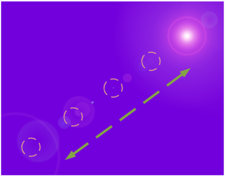

| Start time | Expected observation |
|---|---|
| 00:00:00:09 | A series of five image subtitles appears: a ‘sun’ moving from upper right to lower left, then returning, and then
back down again, then ending at the middle position (over approx. 3 seconds).  Overall, the change in positioning is even, without skips in the sequence (except at the sequence restart). Note: Arrows are shown for clarification throughout this test and are not a part of the actual subtitles. |